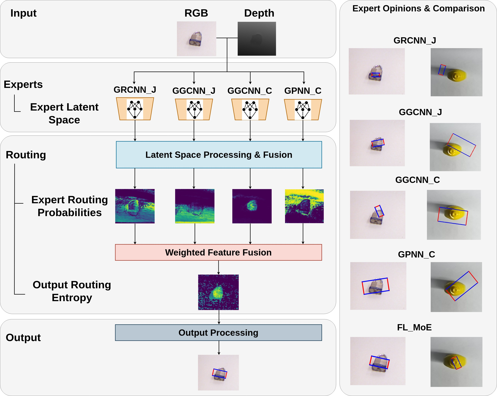
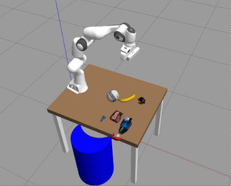

Selected Projects
Occlusion-Robust Robot Perception Pipeline
Real-time perception stack for encoderless Franka Panda. WGAN-GP inpainting reconstructs occluded joints from markerless images; keypoint detection with UKF temporal smoothing feeds Image-Based Visual Servoing, enabling stable control under severe occlusion. Outperforms LaMa with 11.7 FID, 0.91 precision.
Feature-Level Mixture-of-Experts for Grasping
Feature-level fusion across multiple grasp expert networks. Complementarity quantified via Q-statistics and error correlation - proving mid-accuracy moderately-correlated ensembles outperform SOTA individual models. Evaluated on Cornell, Jacquard, GraspNet-1B and Franka Panda System.

Vision-Language-Action Robotic Grasping
Proposal-conditioned VLA framework for cluttered tabletop grasping. RGB-D Mask R-CNN generates object proposals; confidence-based skill selection chooses the best planner across known, unknown, and occluded multi-object scenarios. Deployed end-to-end on Yale OpenHand gripper.

Multimodal Human Activity Tracking
Real-time fusion of RGB-D, EEG, and audio for human activity tracking and attention estimation. Led a three-person team to full deployment - OpenPose, temporal attention, GMM, and optical flow as a full-stack GUI, not just a research prototype.